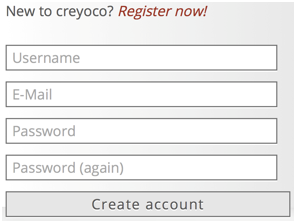
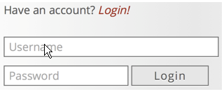

In order to create learning modules with creyoco, please open www.creyoco.de. Creyoco is web-based and can be used directly in the web browser. No installation of a program is necessary. This ensures an access of creyoco, independent of the location and the operating system, as long as you are connected to the Internet.
At the beginning it is necessary to register as a user in Creyoco. Thus, a personal account is generated for you. With your login information, you can access your learning modules at any time.
To register on www.creyoco.de: Enter a user name, a valid e-mail address and password in the online form and confirm your entries by clicking on „Create account“.
Your account will be created. Click on the link „Go to profile“ to go directly to your account.
Note: If the error message „Bitte geben Sie einen Benutzernamen an“ appears next to the field of the user name, this username is already taken. Try a different username in this case.
If you are already registered, you can sign in to www.creyoco.de by entering your user name and the according password and clicking on „Login“.
A successful login takes you to the learning module overview of your account.
Click on the „Logout“ link at the top on the right to log out.